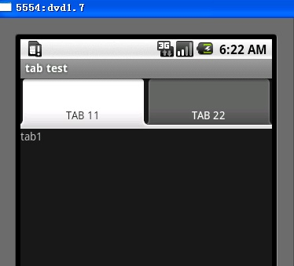

Android Tabhost部件
本文结合源代码和实例来说明TabHost的用法。
使用TabHost 可以在一个屏幕间进行不同版面的切换，例如android自带的拨号应用，截图：

查看tabhost的源代码，主要实例变量有：
private TabWidget mTabWidget;private FrameLayout mTabContent;
private List<TabSpec> mTabSpecs;
// 也就是说我们的tabhost必须有这三个东西，所以我们的.xml文件就会有规定：继续查看源代码：
if (mTabWidget == null) {
throw new RuntimeException(
"Your TabHost must have a TabWidget whose id attribute is 'android.R.id.tabs'");
}
mTabContent = (FrameLayout) findViewById(com.android.internal.R.id.tabcontent);
if (mTabContent == null) {
throw new RuntimeException(
"Your TabHost must have a FrameLayout whose id attribute is 'android.R.id.tabcontent'");
}
也就是说我们的.xml文件需要TabWidget和FrameLayout标签。
接下来构建我们自己的tab实例：
有两种方式可以实现：
一种是继承TabActivity 类,可以使用android的自己内部定义好的.xml资源文件作容器文件。也就是在我们的代码中使用getTabHost(); ， 而相应的后台源码是这样的：
this.setContentView(com.android.internal.R.layout.tab_content);
在系统的资源文件中可以看见这个layout
有了容器，然后我们就需要我们为每个tab分配内容，当然要可以是如何类型的标签：
例如我们构建一下.xml文件
首先tab1.xml 是一个LinearLayout布局
<?xml version="1.0" encoding="utf-8"?><LinearLayout xmlns:android="http://schemas.android.com/apk/res/android
android:id="@+id/LinearLayout01
android:layout_width="wrap_content
android:layout_height="wrap_content" >
<TextView
android:id="@+id/TextView01
android:layout_width="wrap_content
android:layout_height="wrap_content
android:text="tab1 with linear layout" >
</TextView>
</LinearLayout>
然后是tab2.xml是一个FrameLayout布局
<?xml version="1.0" encoding="utf-8"?><FrameLayout xmlns:android="http://schemas.android.com/apk/res/android
android:id="@+id/FrameLayout02
android:layout_width="wrap_content
android:layout_height="wrap_content" >
<LinearLayout
android:id="@+id/LinearLayout02
android:layout_width="wrap_content
android:layout_height="wrap_content" >
<TextView
android:id="@+id/TextView01
android:layout_width="wrap_content
android:layout_height="wrap_content
android:text="tab2" >
</TextView>
</LinearLayout>
</FrameLayout>
接着要注册这两个FrameLayout为tabhost的Content，也就是接下来的代码：
LayoutInflater inflater_tab1 = LayoutInflater.from(this);inflater_tab1.inflate(R.layout.tab1, mTabHost.getTabContentView());
inflater_tab1.inflate(R.layout.tab2, mTabHost.getTabContentView());
然后需要构建前面说的tabhost的第三个实例变量对应得内容，源代码中是这样的：
private List<TabSpec> mTabSpecs =
new ArrayList<TabSpec>(2);
初始化是两个tab的空间然后会自动扩展：
好 我们构建我们的tabspec：
mTabHost.addTab(mTabHost.newTabSpec("tab_test1").setIndicator("TAB 11").setContent(R.id.LinearLayout01)); mTabHost.addTab(mTabHost.newTabSpec("tab_test1").setIndicator("TAB 11").setContent(R.id.FrameLayout02));
也就是把我们的2个layout作为他的content，当然FrameLayout中可以有其他的布局，来放我的组件。
我们不需要在代码里面设置setContentView();因为getTabHost(); 这个方法调用后就已经设置了，源代码：
if (mTabHost == null) { this.setContentView(com.android.internal.R.layout.tab_content);
}
也就是把系统的tab_content当做view设置。
运行后如下：

完整代码：
TabHost mTabHost = getTabHost();LayoutInflater inflater_tab1 = LayoutInflater.from(this);
inflater_tab1.inflate(R.layout.tab1, mTabHost.getTabContentView());
inflater_tab1.inflate(R.layout.tab2, mTabHost.getTabContentView());
mTabHost.addTab(mTabHost.newTabSpec("tab_test1").setIndicator("TAB 11").setContent(R.id.LinearLayout01));
mTabHost.addTab(mTabHost.newTabSpec("tab_test1").setIndicator("TAB 11").setContent(R.id.FrameLayout02));
还有一种就是定义我们自己的tabhost：不用继承TabActivity
首先建立我们自己的.xml文件，当然要包含Tabhost,TabWidget,FrameLayout,着3个标签：
<?xml version="1.0" encoding="utf-8"?><TabHost xmlns:android="http://schemas.android.com/apk/res/android
android:id="@+id/tabhost
android:layout_width="fill_parent
android:layout_height="fill_parent" >
<LinearLayout
android:layout_width="fill_parent
android:layout_height="fill_parent
android:orientation="vertical" >
<TabWidget
android:id="@android:id/tabs
android:layout_width="fill_parent
android:layout_height="wrap_content" />
<FrameLayout
android:id="@android:id/tabcontent
android:layout_width="fill_parent
android:layout_height="fill_parent" >
</FrameLayout>
</LinearLayout>
</TabHost>
注意的是：除了tabhost的id可以自定义外，其他的必须使用系统的id，为什么后面说，
当然我们可以在FrameLayout里面添加view来作为tab的内容只需要在create tabspce时候添加就可以了，我们为了把每个tab的内容分开我们依然使用前面用到的两个tab xml文件
获取TabHost 通过findviewbyid，
setContentView(R.layout.main);TabHost mTabHost = (TabHost)findViewById(R.id.tabhost);
接下来很重要的一步是要使用TabHost.setup();
作用是来初始化我们的TabHost容器：
源代码是这样说的：
<p>Call setup() before adding tabs if loading TabHost using findViewById(). <i><b>However</i></b>: You do
* not need to call setup() after getTabHost() in {@link android.app.TabActivity TabActivity}.
也就是说通过findviewbyid，方法获得tabhost必须setup 而通过getTabHost则不用。
setup干什么呢：源代码
mTabWidget = (TabWidget) findViewById(com.android.internal.R.id.tabs);if (mTabWidget == null) {
throw new RuntimeException(
"Your TabHost must have a TabWidget whose id attribute is 'android.R.id.tabs'");
}
mTabContent = (FrameLayout) findViewById(com.android.internal.R.id.tabcontent);
if (mTabContent == null) {
throw new RuntimeException(
"Your TabHost must have a FrameLayout whose id attribute is 'android.R.id.tabcontent'");
}
他主要是初始化了tabhost的两个实例变量，这里也回答了为什么我们的id必须使用系统定义的id的原因
接下来工作就和前面相同了：
LayoutInflater inflater_tab1 = LayoutInflater.from(this);inflater_tab1.inflate(R.layout.tab1, mTabHost.getTabContentView());
inflater_tab1.inflate(R.layout.tab2, mTabHost.getTabContentView());
mTabHost.addTab(mTabHost.newTabSpec("tab_test1").setIndicator("TAB a").setContent(R.id.LinearLayout01));
mTabHost.addTab(mTabHost.newTabSpec("tab_test2").setIndicator("TAB b").setContent(R.id.FrameLayout02));
完整代码：
setContentView(R.layout.main);TabHost mTabHost = (TabHost)findViewById(R.id.tabhost);
mTabHost.setup();
LayoutInflater inflater_tab1 = LayoutInflater.from(this);
inflater_tab1.inflate(R.layout.tab1, mTabHost.getTabContentView());
inflater_tab1.inflate(R.layout.tab2, mTabHost.getTabContentView());
mTabHost.addTab(mTabHost.newTabSpec("tab_test1").setIndicator("TAB a").setContent(R.id.LinearLayout01));
mTabHost.addTab(mTabHost.newTabSpec("tab_test2").setIndicator("TAB b").setContent(R.id.FrameLayout02));
运行结果同上。